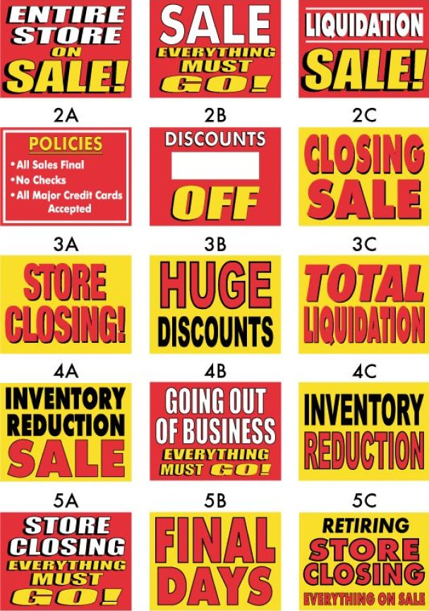

Термин

Начертание шрифта
font style
Вариант рисунка шрифта внутри одной гарнитуры. Начертания могут отличаться насыщенностью, шириной, наклоном, контрастом и другими особенностями рисунка, сохраняя общий характер гарнитуры.
Разные начертания позволяют использовать одну гарнитуру для разных задач: от основного текста и выделений до акцидентных надписей.
Мануфактура «Same Day Sign», каталог рекламных вывесок, плакатов и баннеров «Closing, Liquidation, Sale Signs and Banners», США, 2010-е годы